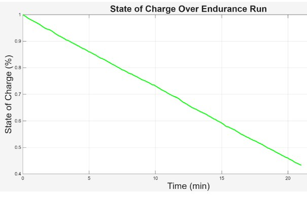
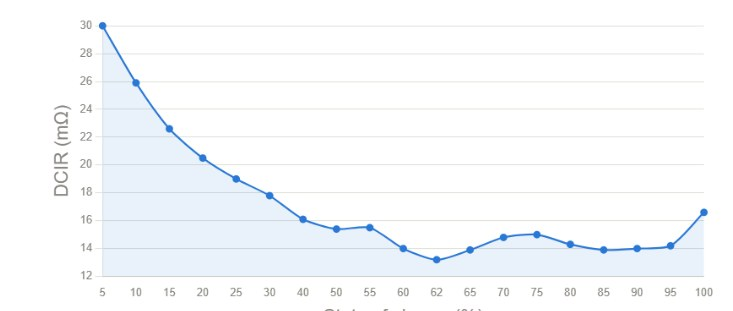

Tractive Battery Thermal Model
A MATLAB model that predicts cell temperature and state of charge across a full FSAE endurance run, to judge whether a Molicel P60C pack needs active cooling before a single cell is bought.
- Tools
- MATLAB
- Cell
- Molicel P60C
- Pack
- 140S3P (theoretical)
- Inputs
- LapSim power trace, published DCIR data
- Status
- Model built, awaiting bench calibration

Approach
The model solves a coupled two-state system: cell temperature and state of charge. Per-cell current comes from a real LapSim power trace divided across the 140S3P pack. Internal resistance (DCIR) is looked up as a function of state of charge from Molicel's published P60C data, so resistance rises realistically as the pack drains.
Qgen = I2 R(SOC) Qloss = hA (T − Tamb) dSOC/dt = −I / Qcell
Heat generation is ohmic. Heat rejection is lumped convection to ambient, where hA is the calibration parameter to be fitted against bench data. State of charge comes from coulomb counting and feeds back into the DCIR lookup, closing the loop. The endurance run is built by repeating the LapSim lap profile for all 20 laps.
Results
For the assumed conditions, cell temperature rises from about 30 °C to about 36 °C over the 20-minute run. The steepest climb comes in the first five minutes. State of charge falls almost linearly over the same run.


Limitations
The model is deliberately simple. Each cell is a single lumped thermal mass. Heat generation is ohmic only, ignoring entropic heat. Current is derived from power at a fixed nominal voltage, ignoring voltage sag. DCIR depends on state of charge but not temperature, and the convection term and material properties are typical Li-ion values, not measurements.
Its strength is how little it needs. From a DCIR curve alone it produces useful predictions before a physical cell exists, which makes it a practical screening tool for comparing candidate cells before any bench testing. The next step is measuring DCIR and temperature rise on a real cell to calibrate hA and validate the model.